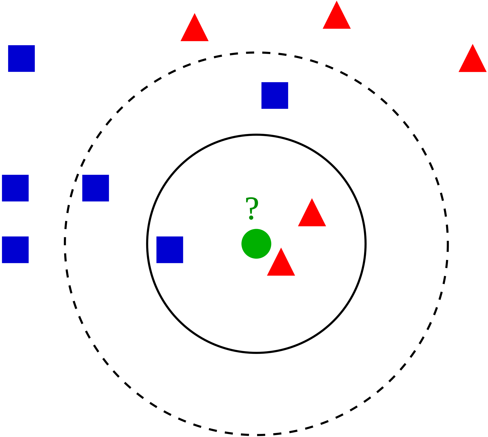

How to match coronal holes between sequential frames?
K - Nearest Neighbor Algorithm
KNN algorithm is a simple supervised machine learning algorithm that is used to solve classification problems. KNN is easy to implement and understand. Classification is based on proximity. Here, we will use the coronal hole centroid location to classify its ID number based on previously identified coronal holes.
Example of KNN classification

The test sample (green circle) should be classified either to red triangle or blue square.
-
Case 1: If K = 3 (solid line circle) then it is 75% red and 25% being blue.
-
Case 2: If K = 5 (dashed circle) then the new coronal hole is 60% blue and 40% red. Therefore, in this case when k=5, the test sample will be classified as blue. However, when k=3, the test sample is classified as red. Notice that KNN algorithm is sensitive to the hyperparamter k.
Implementation
To prune the list of possible CH class associations and reduce the complexity of the proposed tracking algorithm, we utilize k- Nearest Neighbors (kNN) algorithm. kNN algorithm is a simple supervised machine learning algorithm that is used to solve classification problems. Since kNN is supervised all training measurements are labeled. Consequently, in the context of our problem, the CH centroid location are treated as the training dataset along with the corresponding CH labels. The labels indicate the CH class. Let the training dataset be denoted as
where n is the number of previously identified CHs in a given window of frames, \bar C_{i} = (\bar x_{i}, \bar y_{i}, \bar z_{i}) is the centroid location in Cartesian coordinates, and L is the corresponding label. Note that the number of unique labels is less than or equal to the number of centroids in T.
Our goal is to prune the list of possible labels for a newly identified CH, denoted by X, based on its distance to all other centroids in T. The distance is measured in Cartesian coordinates \mathbb{R}^3 and is equipped with the Euclidean norm (||\cdot ||_{2}). Given the training dataset, let the centroids be reordered based on their distance to X, such that {\|C_{1}-X\|_{2}\leq \dots \leq \|C_{n}-X\|_{2}}. Let \tilde T \subseteq T contain the first k centroids that are of closest proximity to the newly identified X. The baseline kNN metric is defined as
where I is the indicator function of the subset \tilde T, which evaluates to 1 when the argument is true and 0 otherwise.
The baseline kNN results described above can be sensitive to the choice of the hyper-parameter k. If k is too small it can discard important associations, and otherwise, when k is too large, it will include points that are far from the query centroid (X). To overcome this challenge, we implement a modification of the baseline kNN, namely, the weighted kNN algorithm. The assigned weight is \frac{1}{d} where d is the euclidean distance.
The list of associated classes is then pruned by a certain threshold \texttt{kNNThresh} \approx 0.1. Meaning, all class associations where P_{wknn} < 0.1 are removed from potential class list.
KNN Centroid Example

The training dataset:
1 2 3 4 5 6 7 8 9 10 11 12 13 14 15 16 | |

Lets compute the distance between [4, 1] and all the 6 centroids in the library (K=6).
1 2 3 4 5 6 7 8 9 10 11 12 13 | |
Compute the weighted sum probability based on distance.
Predicted probability of [4, 1] is 0.594 and 0.405 for class red and blue, respectively. Since both P_{red} and P_{blue} are above \texttt{kNNThresh} then the tracking algorithm will proceed to compute the area overlap between both classes to evaluate the class of the test sample.